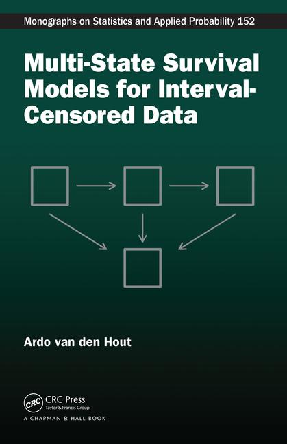

|
Multi-State Survival Models
for Interval-Censored Data Ardo van den Hout CRC/Chapman & Hall, 2016 (link)
|
 |
R code:
The following code is not exhaustive. Adapt to create similar graphs or to fit extended models.
Chapter 1:
Diagram four-state model for CAV data
Fit CAV model using msm
Fit CAV model with user-written code
Chapter 2:
Functions for fitting survival models
Fit survival models to CAV data
Chapter 3:
Functions for fitting models to Norway data
Fit models to Norway data (data not available)
Chapter 4:
Scoring algorithm for ELSA data (data not available)
Chapter 7:
Life expectancies for three-state model with fixed parameters
Chapter 8:
Cross-sectional data
Fit model to cross-sectional data